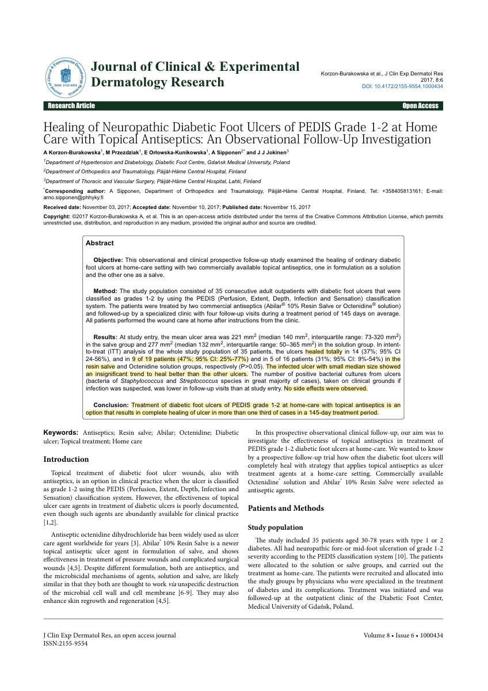

Clinical Study
A prospective investigation evaluated Abilar® 10% Resin Salve in 35 adult outpatients with neuropathic diabetic foot ulcers (PEDIS grade 1–2). Participants were randomised to apply either the resin salve (n=19) or an octenidine solution (n=16) as at-home care following initial clinical instruction. Standard protocols included the use of offloading shoes and surgical debridement at baseline. The study followed patients over an average of 145 days, with wound area and progress measured through digital photography at four follow-up visits spaced roughly 4 weeks apart.
Key Findings
Complete healing was achieved in 47% (9 of 19) of patients in the Abilar® group within the 145-day period, compared to 31% (5 of 16) in the octenidine group (p > 0.05). For ulcers that fully closed, the mean speed of healing was a reduction in area of 1 mm² per day. Notably, the treatment successfully restarted healing in chronic wounds that had a median prior duration of 377 days before entering the study.

Download
Download PDFReference
Korzon-Burakowska A, Przezdziak M, Orłowska-Kunikowska E, Sipponen A, Jokinen JJ. Healing of Neuropathic Diabetic Foot Ulcers of PEDIS Grade 1-2 at Home Care with Topical Antiseptics: An Observational Follow-Up Investigation. J Clin Exp Dermatol Res. 2017;8(6):434. doi:10.4172/2155-9554.1000434
Back to study